来源：https://a7dillyimr.feishu.cn/docx/XttDdp7sDo4RltxwJVXcDFNrnkc
我在生财有术也潜水半年有余了，看了不少大佬的帖子，真的收获蛮多的。我本身也是副业折腾者，作为一个小透明，盘点了一下我折腾过的搞钱副业：
从互联网教育转型到了互联网保险赛道，负责保险赛道小红书渠道，运营了半年左右的时间，粉丝增长2w+，0成本，月咨询达5k+，精准有效意向用户1.3k+，这个成绩相较于微信生态裂变获客，效率确实差一点，但对我来说是一个全新模式的尝试，且裂变是泛流量，并不精准，小红书来的，精准高意向客户居多，圈内有做保险的，可以大概知道每条线索多少钱，能创造的价值收入有多少。今天抽时间写这条帖子，算是对过去半年的一个复盘，主要涉及的内容有：
今天我想结合自己过去转行的经历，加上运营小红书的经验，跟大家分享一下一路走过来的弯路和收获，也是新人第一次发帖，希望能够对大家有收获。
之后我有机会还想分享：
请大家多多指教！！
双减政策尘埃落地，深处教育行业的我开始重新思考自己的职业发展方向，相较于其他教育行业的同学我觉得我还算幸运，政策落地之后其实对于我所在的公司和我个人来说，因为赛道不完全是k12，冲击并没有特别大。但我也陷入了一种成长焦虑中，所在公司赛道已经是top级了，但每天就像一颗螺丝钉，微信生态裂变，矩阵公众号几十万几十万的增长，已经不是什么新鲜玩法了。教育行业的获客，懂得都懂，野路子玩法多，需求多，量大，但来来去去就那么几种。
在此期间，我也尝试过做抖音的个人IP，到做到几万粉丝之后，我开始思考意义在哪，一变不了现，二后端链路长。当然中途弯路很多，做品牌向的当然也不看这些转化。我自己的抖音做到4.7w粉丝之后就停更了，一来是，凭借接广告投入产出不成正比，二来，上班策划拍摄剪辑全靠自己一人，真实在也没有精力搞这么多事情。
做小红书是无心插柳柳成荫，最早期我是做公众号内容的，21年开始在小红书上做内容，我对平台调性什么，对于平台认知什么只有很浅层的理解，完全是依靠我做公众号内容的底层逻辑，把经验去平台迁移去做，再加上自己有一点编导专业底子，所以自己拍、自己写脚本、自己剪辑、把自己抖音的内容分发到小红书平台，做了几篇笔记之后，有几篇大爆，所以在1个月内，就涨到了3.7w的粉丝，当时确实有一点点运气的成本在。
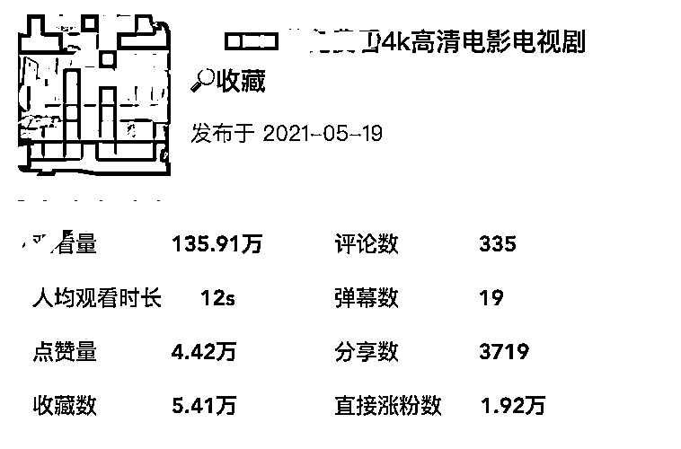
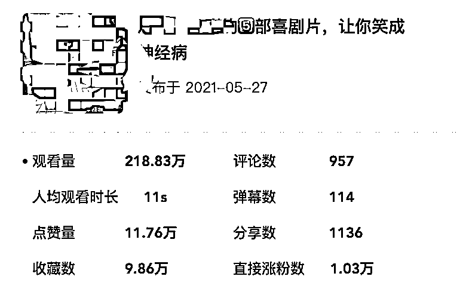
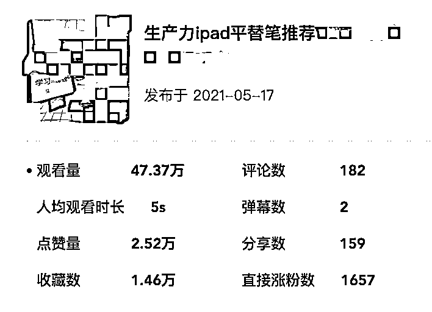
粉丝有了，但我停更了，依靠自己做内容的逻辑确实可以做爆文，但怎么变现呢？
话说回来，在教育行业待的时间长了，思维毕竟局限，也没有吸收其他行业的知识，后来我就瞄准了门槛高，毕竟也属于金融的保险赛道。但作为跨行人来讲，保险这个坑水确实真深，对内容来说，确实是个巨大挑战。
如果非让我形容的话，教育行业得感性，保险金融得理性。从内容本身来讲，写教育行业的软文，传递焦虑，但写保险行业的内容，你得认真分析，还不能轻易传递焦虑，毕竟保险这东西，涉及到一些保险的条款呀，产品内容呀，非常的复杂，光是险种都要分好几大类，尤其是理财险，弯弯绕绕很多，必须谨慎分析。做内容是横向迁移，换了产品形态，但是能力模型并没有变，虽然刚开始看保险晦涩难懂的文章跟看天书差不多，但好在我学习能力还不错，摸黑赶路的过程虽然痛苦，好歹中途坚持下来了。
说下感受，互联网金融保险算是比较传统的行业，属于非常细分又让人招黑的一个赛道，毕竟大家传统都觉得，保险都是骗人的，这点咱确实承认。
保险赛道，难点在于：
首先，用户细分垂直，量没有教育行业大。很多人的认知都停留在，线下经纪人的那一套模式（买个保险都是通过亲戚朋友买，还被人骗）对行业的误解很大；再加上教育转型过来，以为用户都是那么好搞的，迁移到保险赛道之后，发现，真不一样啊，行业那一套打法，换个行业有可能失灵；
其次，用户需求待激发。一听保险，避而不及，躲着你都没毛病，怎么才能内容营销获客建立信任度呢？
最后，保险内容专业度。隔行如隔山，这个难点对于任何跨行的人都存在，换一个行业，行业内容的敏感度就得重建，又得摆脱思维固化的局限。第一和第二都是跨行之后，经历的行业落差感，都是摸黑赶路的过程，是一点点经历并且有了一点点成长和收获，才斗胆拿出来唠一唠。
1、在你还没够到这个行业的门槛之前，不要中途放弃；摸黑赶路的时候，恰好是成长最快的时候；
2、转行需要勇气，但是更需要在进入一个行业之前先了解头部赛道和公司，找专业人士问清楚；
3、人生不设限，就是折腾，不给自己的能力设限、不要给自己的领域设限，趁年轻，多了解其他行业没坏处；
4、如果只会做一个赛道，随着年龄增长，不过是更加熟练的流水线螺丝钉，内核能力永远是可迁移的，这个在哪个行业都适用。
这是账号近一个月的数据，但账号粉丝增长最猛的时候，大概是4月，刚转型做视频的时候，一个月增长5-6k粉丝，是因为出了3条爆款内容，其中1条视频，复发了很多次，每次发，都能带来1k+的评论互动，约有1w+咨询，这些全部都靠内容获客的自然流量，没有大规模投放加持。
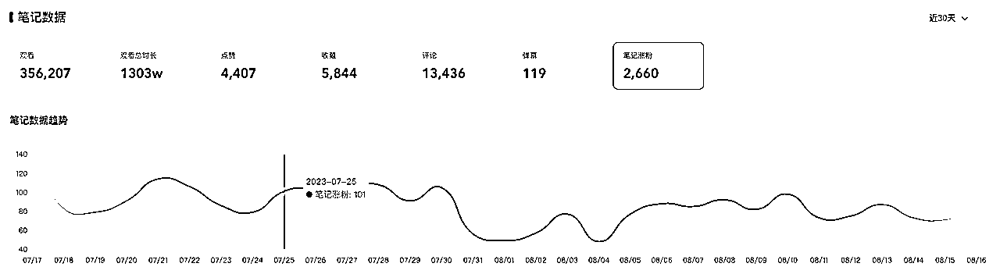
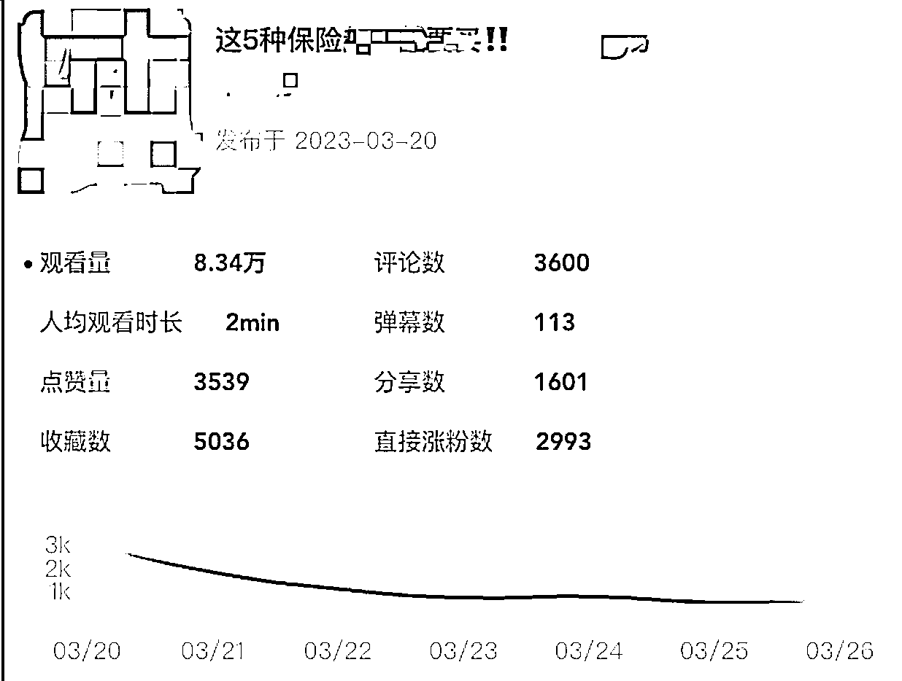
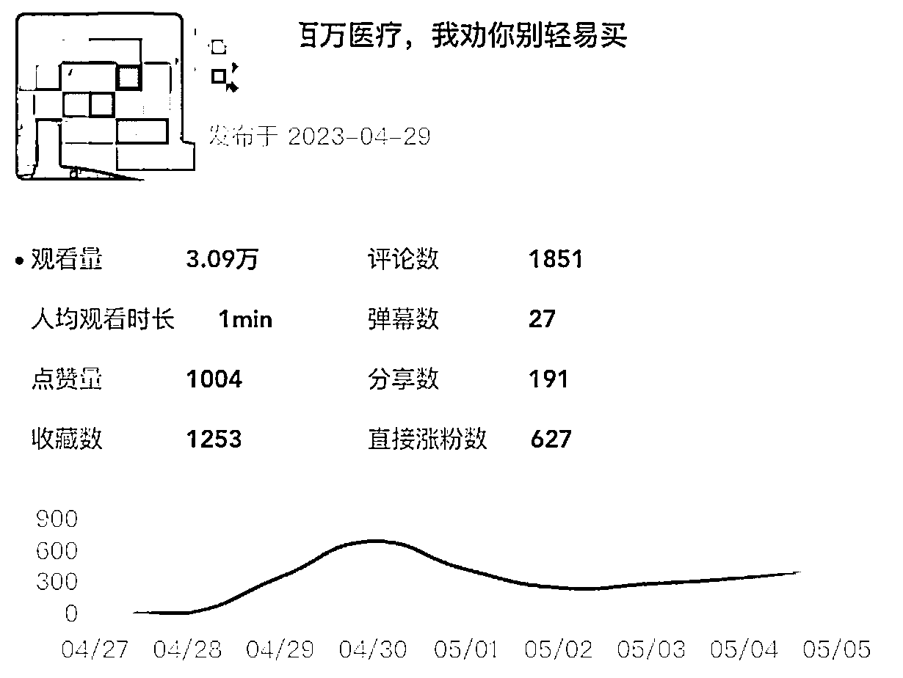
小红书图文和视频，都尝试过，我本身更擅长做视频，做图这一块，连思考+做，现在链路跑通，后续带着实习生+兼职整。可以从视频+图文两个方向，做个分享：
前期起号一定是一个磨练心态的过程，尤其是没有什么结果的时候，容易心态崩，可能会觉得自己的付出没有正向反馈。对于换行业，换平台来说，都是陌生领域，有上次在参加北京线下生财活动的时候，也有听到有圈友没有内容经验，做内容刚开始有心态崩的时刻。从0-1的过程确实很难，但是心态一定要稳住，但把过程做好，结果自然不会太差。
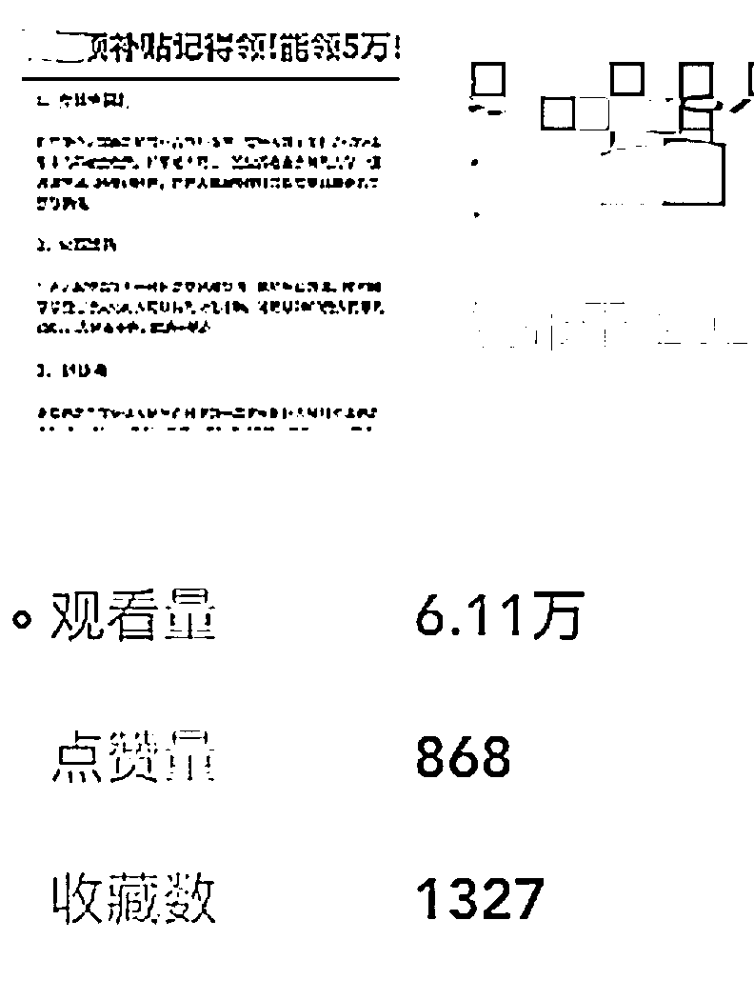
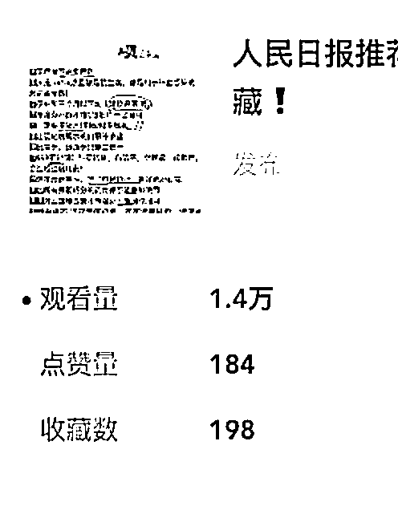
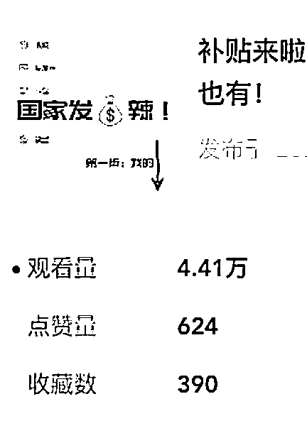
有的图文爆款是滚了半年之后，才能够达到很高的互动条数。刚开始做的时候，咨询数真的很低，这个时候就更要需要耐着住性子去做，一个两个的咨询真的不算什么，重要的是一篇爆文能够带来的长尾流量，而且长尾是有吃尽的时候，所以一定要把爆款稳住，这样才能咨询数才能指数级增长。
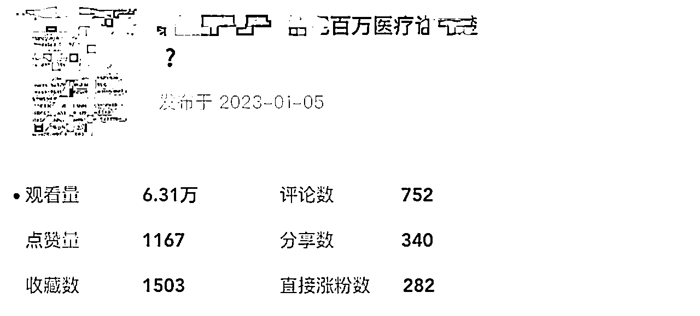
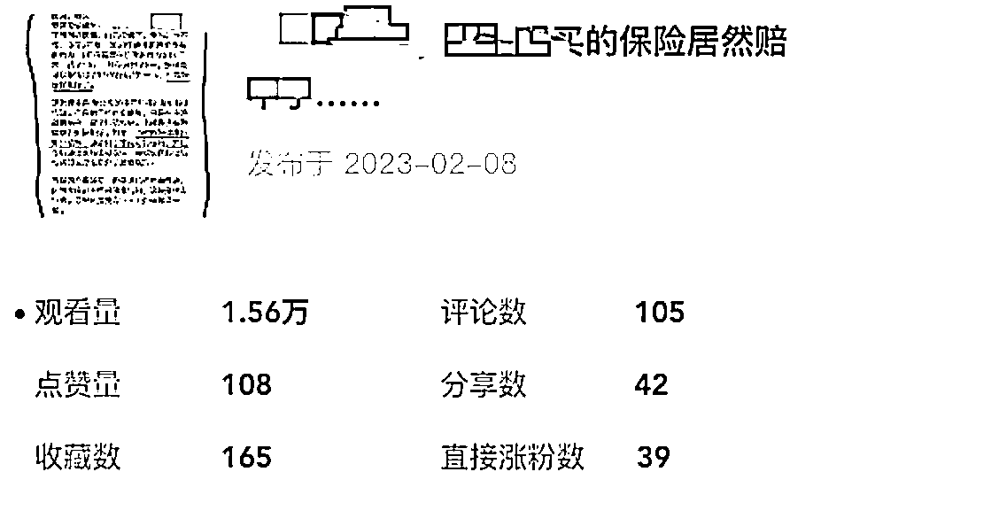
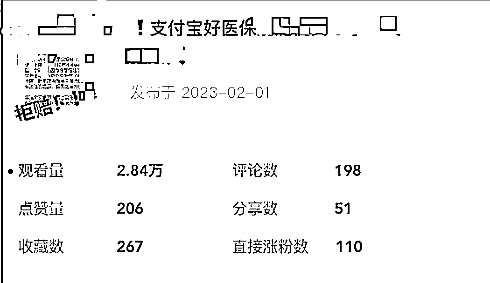
新的形式得多试，试就得创新，但创新是需要时间成本的，万一创新不出来新花样，数据跑不出去，耽误的是自己的时间，所以做内容就是站在巨人的肩膀上，爆款的选题，会重复爆。做内容的底层逻辑就是，多看，多想，多学习同行爆款，大家都这么做，都被我捉住好几个同行连同素材都连搬带抄的了，这么看来，我们也变成同行学习的对象了。
刚进这个行业的时候，我不知道什么内容才算是爆，然后什么样的选题才算是爆款的选题，因为对这个行业不了解，也不知道用户的痛点是什么？但是我做了一个动作，快速的去了解了这个行业内容，就是用数据分析，把同行的所有的爆款内容全部都采集起来，形成了自己的爆款库，这也是我之前做公众号底层逻辑一样，这样其实对于选题有一个大概的把控，而且从这里面你能发现很多玄妙的东西，比如说有的爆款就是经常重复的多次的做，每做一次爆一次。
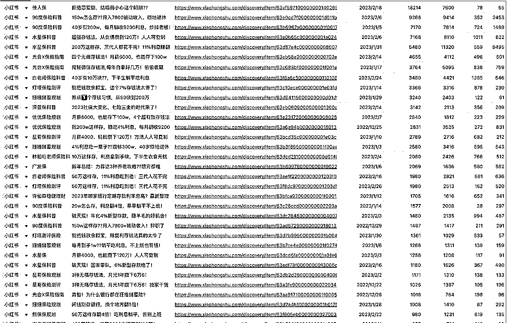
我通常做内容会把百分之八十的精力放在选题上，因为但凡选题做的好你这个选题基本上都会爆。而且选题在保险赛道又比较特殊，比如你必须正话反着讲，你不能去硬去推保险，但你顺着人性讲保险避坑，就会有人看，目前已经验证保险避坑这个角度在内容上爆款的概率比较大。
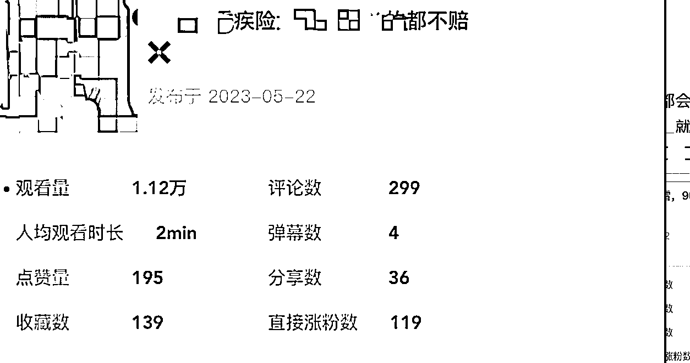
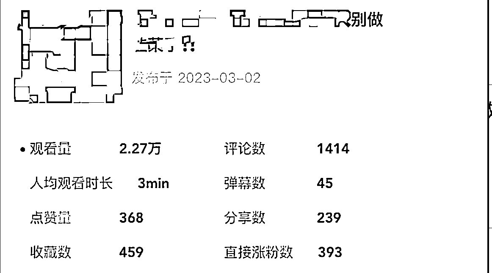

刚开始做内容是比较累的，因为你需要验证一种模型能跑出去的模型，但是但凡你已经验证成功了，这个模型是可以重复迭代多次复用的。比如爆款的决定性因素，标题封面内容，内容又分为中间开头，结尾，每一个单独的细节都是模型。小红书封面的打开影响因素还是比较大的。比如我就测试过同样的内容，换不同的封面，数据千差万别，好的封面就是能够跑出去效果。
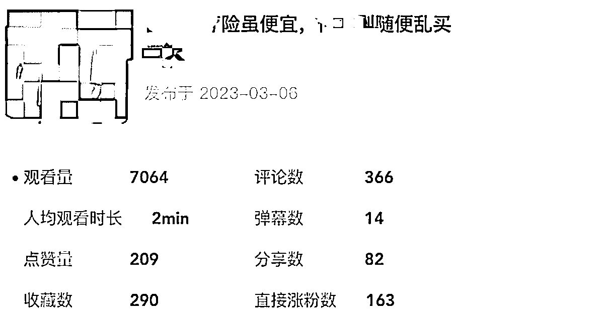
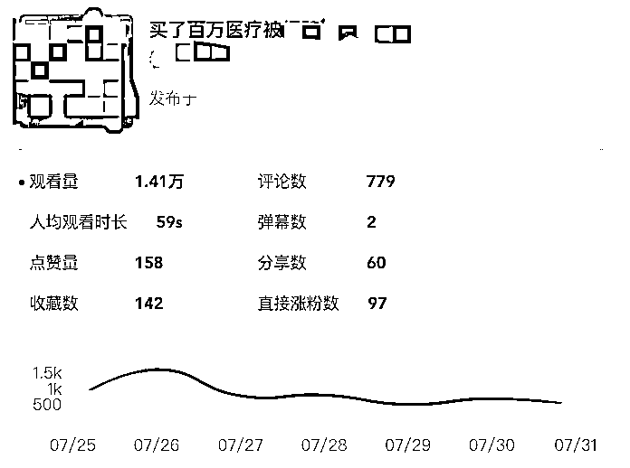
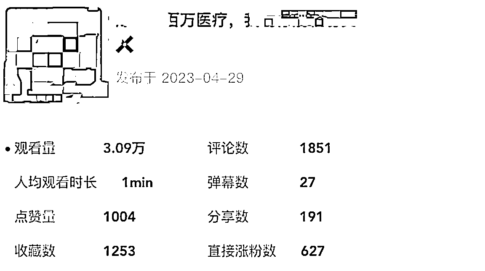
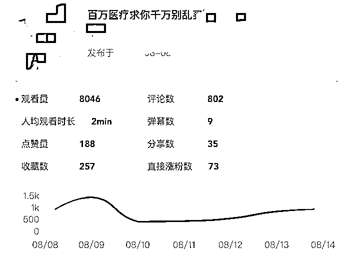
一旦标题有模板，封面有模板，中间开头结尾都有模板，这些细小的元素你都形成了自己的认知和方法论，你后面做内容会越来越轻松。你再去跑内容模型的时候，你就及时复盘，小步迭代就可以了。
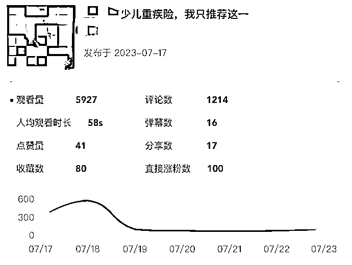
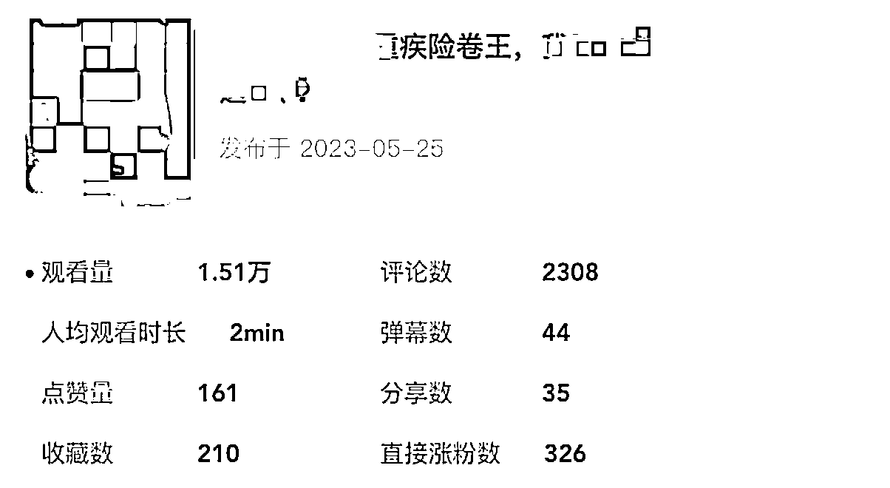
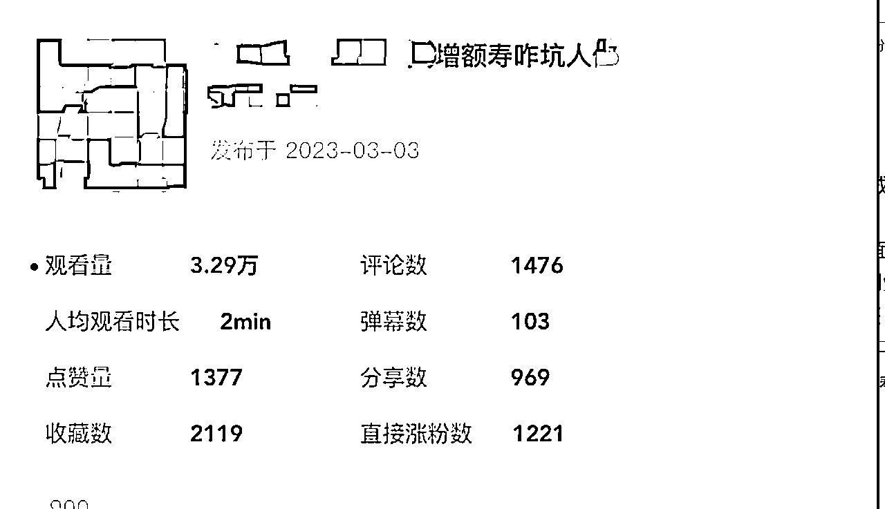
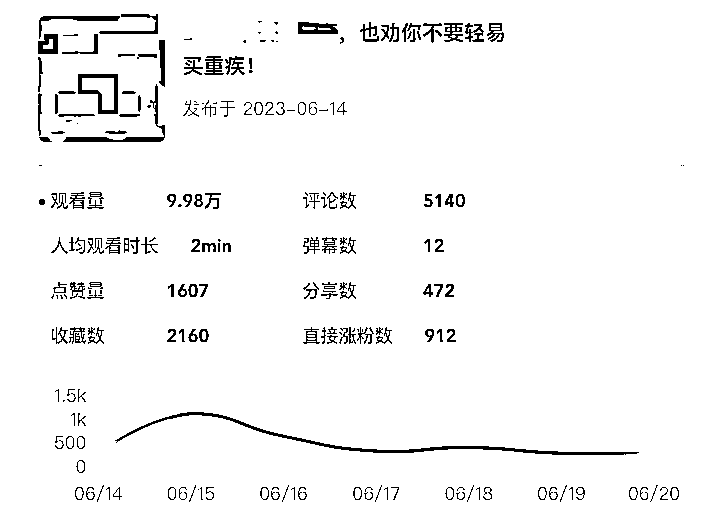
可以看到我的内容互动评论数都特别的高。咱们引流主要是为了获客，对吧？但凭什么用户会给你留言呢？你的内容里边有没有插入一些话题点？或者钩子能够给到用户的利益点，关于这点，推荐看一下关键明老师的《爆款文案》，写营销软文，结尾都有一个钩子给到用户明确利益，迁移到短视频生态，写脚本也一样，同样到逻辑，具体这一点大家可以多去拆解一下优质的内容，去看一下他们的怎么去做，引导互动的，形成一个钩子结尾的模板库。
023++++++++++++++++++++++
3
做账号到1-3个月的时候，会遇到一个问题，就是后台的私信人数太多了，根本就回不过来，，小红书每天打招呼次数是25次。25次用完，你就不能再跟陌生人发消息了，但是如果已经成为你的粉丝或者后台主😊😊😊😊😊😊😊😊😊😊😊😊😊😊😊😊😊······················································1111111111111111111111111111111111111111111111111111111111111111111111111111111111111111111111111111111111111111111111111111111111111111111111111111111111111111111111111111111111111111111111111111111111111111111111111111111111111111111111111111111111111111111111111111111111111111111111111111111111111111111111111111111111111111111111111111111111111111111111111111111111111111·j9动私信你的，你可以频繁多次的去发消息。因为咨询的用户太多了，所以噩梦开始了，这个也是甜蜜的烦恼。每天一睁眼，打开小红书3个99+等着你，消息99+，新增99+，收藏99+，于是有一段时间我是上班得回消息，下班得回消息，早上起来睁眼闭眼都在回消息，感觉每天跟用户聊都已经晕了，有一段时间我做梦都在回消息，真的毫不夸张。

于是我一直在想到底该怎么去解决这个问题，直到有天我在生财上看到了小红书私信解决的方案，一个解决就是用虚拟手机的方式，根据关键词自动回复。
利用后台工具完全可以解放双手，解决评论私信回复的问题，在单账号打招呼次数用完的时候，可以自动评论相应的话术给到评论的用户引导用户关注，这样就能多私信条数的机会，也能提升私信的及时性，要知道用户过来问，如果在后台做不到及时回复，用户就跑去问其他博主了，毕竟小红书做同样赛道内容的人很多。
1、给用户明确的利益承诺。比如钱，数字
2、起用户的猎奇心理，以问句为题
3、凸出“避坑”等字眼，或者能激发用户损失厌恶心理“买错血亏”
4、爆款封面的击中痛点的关键词进行排列组合
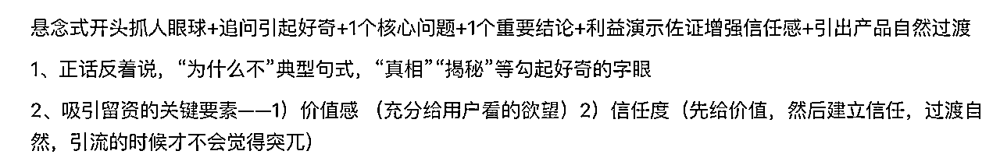
①提出问题式开头:引出用户共性问题，让用户带着问题在视频中找答案
②反差式开头:用反差打破用户固有认知，建立权威专业感，让用户耐心听下去
③痛点式开头：利用用户损失厌恶心理，提出问题，给用户建立心理预期
正文结构化：首先，其次，再次，然后……举例说明观点去论证
说清楚、讲明白
留钩子一定要到位👇🏻
总结：高诱惑力的前置信息
最短的时间内告诉用户“看完这条视频你能得到什么” 放在开头，给用户看的理由，会让用户建立起心理预期
①采用竖版视频，更能增进跟用户之前的沟通感；布景上，考虑到出镜人男性的身份，用光布景上更深邃，来增强高端感；
②每次拍摄一定要多拍封面，而且需要提前想好人物动作，因为内容比较多，但是好的封面来来回回就那么几个，所以封面一定要多囤！
③拍摄前，一定要多跟主播沟通，讲清楚要求，给主播观看想要的内容表现形式风格，语速，更容易理解，前期沟通明白才不至于拍摄的素材到后期可能用不了！
④拍摄前，一定要仔细打磨脚本文案，在拍摄过程中，主播是几乎是一气呵成的，如果碰到有的话不是很通顺，主播就容易卡顿，其实有的文本写出来跟读出来的感觉还是有区别的！尤其是提前拷贝U盘的时候关于内容文本一定要检查好！
①跟剪辑的沟通一定要一次到位，及时反馈，这样能够充分预留出时间修改
②确保整体素材画面风格统一，比如表格都是主题色比较好
③拍长的视频有助于二次剪辑分发，但效果如何还待进一步测试
+V：ipyy8888
需要链接资源：高课单价产品
关键词：流量增长 内容运营
其他分享：
“写过100+篇文案后，我总结出这3条文案转化真理。”
（建议收藏）互联网运营、文案、创意、社群、管理等最全书单
新手如何写标题？让我这套「万能模板」拯救你！
干货|这个时代，为什么要拥有「新媒体」技能？
拿来就可以直接用的新媒体写作套路！
2000字帮你找到最匹配你的行业和方向